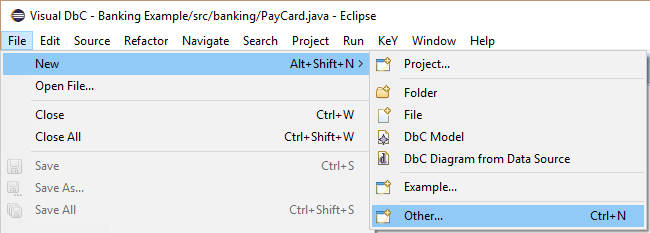
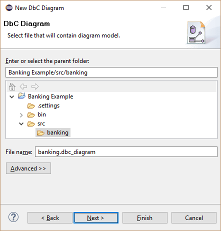

Visual DbC is a proof management and visualization tool. It allows to visualize code members (e.g. types, attributes, methods) together with specifications (e.g. method contracts, invariants) and proofs in a DbC diagram similar to an UML class diagram. Proof references are used to indicate that a code member or a specification is used by a proof.
The following sections illustrate the main features of Visual DbC using screenshots.
Each section contains numbered screenshots that explain a usage scenario step by step.
Clicking on each picture produces a more detailed view.
The screenshots may differ from the latest release.
Prerequisites
Visual DbC is compatible with Eclipse Indigo (3.7) or newer.
Required update-sites and installation instructions are available in the download area.
Visualize existing source code
1. Select package to visualize its source code. Subpackages will be automatically included.
1. Select package to visualize its source code. Subpackages will be automatically included.

2. Open new wizard via context menu item "New, Other..." of the selected package.
2. Open new wizard via context menu item "New, Other..." of the selected package.
3. Select "Visual DbC, DbC Diagram from Data Source".
3. Select "Visual DbC, DbC Diagram from Data Source".

4. Define the file name of the diagram file. This file contains the graphical representations.
4. Define the file name of the diagram file. This file contains the graphical representations.
5. Define the file name of the model file. This file contains the content.
5. Define the file name of the model file. This file contains the content.
6. Optionally change the package treatment and finish the wizard.
6. Optionally change the package treatment and finish the wizard.


{kind=link}
{kind=link}
{kind=link}
{kind=link}
{kind=link}
{kind=link}
{kind=link}